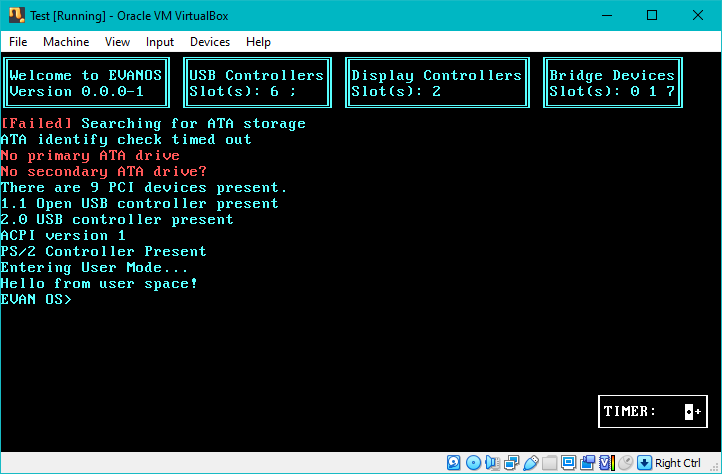
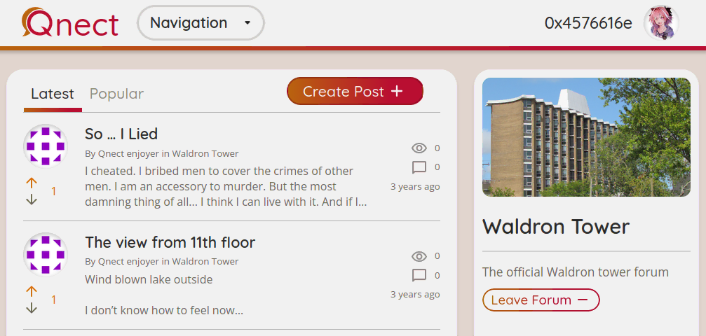

Iridium
A microkernel operating system from scratch with a system API inspired by Fuchsia
A passionate full-stack developer with experience in a wide range of technologies and UI design
I am
The best way to learn something new is to try it yourself. I aim to use at least one new technology in any project I take on, and develop a broad understanding of software both in and outside of the browser.
A microkernel operating system from scratch with a system API inspired by Fuchsia
A forum built with React and Node in 3 weeks for the QWeb development sprint
Minecraft mod improving VR support for Create and Sable
Discord bot that posts daily menus for the Queen's University dining halls
Two servers and the associated infrastructure running Qnect and my various other self-hosted services
One of my longest running projects is the creation of an entire operating system from the ground up. Iridium is a microkernel operating system for x64 CPUs written in C and assembly. The kernel is responsible only for memory management, process scheduling, and inter-process communication - all else, including hardware drivers, is the domain of privileged user-mode processes. Access to kernel resources is granted in the form of object handles, which identify a kernel object inside a process's execution context and denote access capabilities. Processes, threads, IPC channels, hardware I/O ranges, memory address mappings, and memory allocations are all represented by object handles, and all types are equally shareable among other processes with the principle of least privilege baked right in. Object capabilities can only be reduced, never expanded. This design was largely inspired by Google's Fuchsia project. The architecture leads to some unique possibilities, such as establishing shared memory buffers with an arbitrary number of processes just by sending around copies of a handle to a common virtual memory object, or creating ring buffers without any special APIs by mapping the same memory object twice back-to-back.
Iridium was born from a persistent exploration of kernel programming over several years. I started small, writing 16-bit real mode assembly that used BIOS calls to load disk sectors and process input.
After outgrowing real mode I started anew in 32 bits. The OSDev Wiki and Intel's software developer CPU manuals were indispensable resources during this period. I wrote a PS/2 keyboard driver, and successfully enumerated PCI devices under emulators and on real hardware

Iridium is the latest instalment in this chain of projects, and host to many firsts in my journey: my first 64-bit operating system, the first to have a kernel API comprehensive enough to perform useful work, and the first to load an init process from the disk without recompiling the kernel.
I led a team of five to build a forum website during a QWeb development sprint at Queen's University. Without any prior web development experience between us, we built a React SPA paired with a Node JS backend, creating a working MVP in just three weeks on time for the demo. I took charge of a development cycle, running design meetings, guiding technical decisions, and overseeing QA testing before deployment. Together we built a platform where users can create forums for different topics, have branching conversations in the replies, and vote on each others' content.

The project uses a custom bcrypt-backed authentication system, Express, and MongoDB on the backend.
I'm currently in the process of overhauling the whole platform ahead of an open-source release! The new version includes a fully relational Postgres database and server-side rendering, leading the way for improved performance, flexible content feeds, and search engine presence.
This Minecraft NeoForge mod is an ImmersiveMC addon for version 1.21.1, adding VR-oriented integration with the Create mod and allowing ImmersiveMC's existing features to work properly in Sable's physics sublevels. The Sable compatibility enhancements are implemented at the level of core hitbox rendering and interaction, ensuring that even if immersive features are modified or added in the future they will remain compatible.
Sable's modifications supporting detached physical bodies require a significant load of injected code into surfaces that were originally designed under the assumption that the world exists on a single Euclidean grid. Sable simulates these extra physics bodies in an entirely different engine running parallel to the game, and overlays the bodies on top of the standard game world. This breaks the core assumptions that every other mod relies on, such as only one block being able to exist at a specific set of coordinates at once, and that blocks close enough to interact with each other are actually nearby in the coordinate space. The authors did their best to ensure that common distance related functions and a huge list of base-game features were patched to work in the presence of physics bodies, but ImmersiveMC is one of many mods fundamentally impaired by these changes. Its entire multitude of features (for both VR and standard play) are rendered completely invisible and inoperable when anchored to Sable's sublevels.
By making a careful selection of patches to the core APIs supporting most of ImmersiveMC's block-based interactions, it was possible to patch in sublevel transparency across the board without the need to individually rewrite every interaction. And since I've already put the effort into supporting Sable, it is only natural to extend ImmersiveMC's mechanics to Create as well; since Sable was developed as a foundation for Create: Aeronautics specifically and those mods are near guaranteed to be used in parallel.
A Discord bot that automatically posts the day's menus for the Queen's University dining halls. Data is sourced through the same API used on the university's official dining hall website, reverse engineered by inspecting the code and network traffic. This information is fetched and restructured into Discord embeds every morning, and posted into configurable channels in every server the bot is added to.
My personal instance (Affectionately known as FoodBot) evolved to include several automated responses to inside jokes among friends and voting on Memes shared in our server.

I maintain two physical servers as a home for my own creations and to practice data sovereignty.
Rural internet imposes some constraints on services expecting inbound traffic however, so I use a combination of Cloudflare tunnels and a cheap, VPN-linked Azure server as my network gateways. Cloudflare's caching layer comes with the additional benefit of reducing the load on my home network. My personal devices are configured to use my own DNS server, blocking the majority of ads and tracking at the network level. My smart home compatible devices (including a de-amazonified Alexa!) are linked by a globally accessible Home Assistant instance, and I run a personal XMPP instant messaging server for myself and friends. I can even manage the settings and data of several services directly through symlinks in SMB shares, making tagging music in my Jellyfin media library or writing datapacks for my two Minecraft servers trivial.
Qnect's frontend deployment pipeline links to an Azure static web app, while the backend lives on my own hardware.